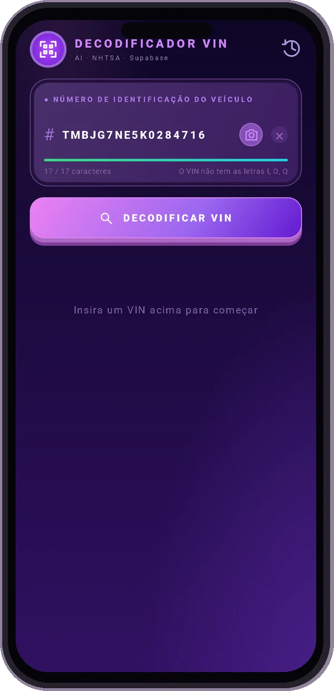
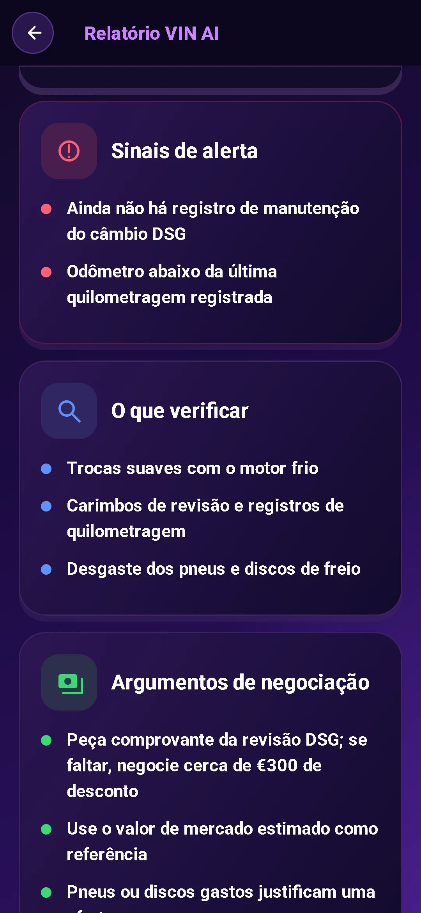
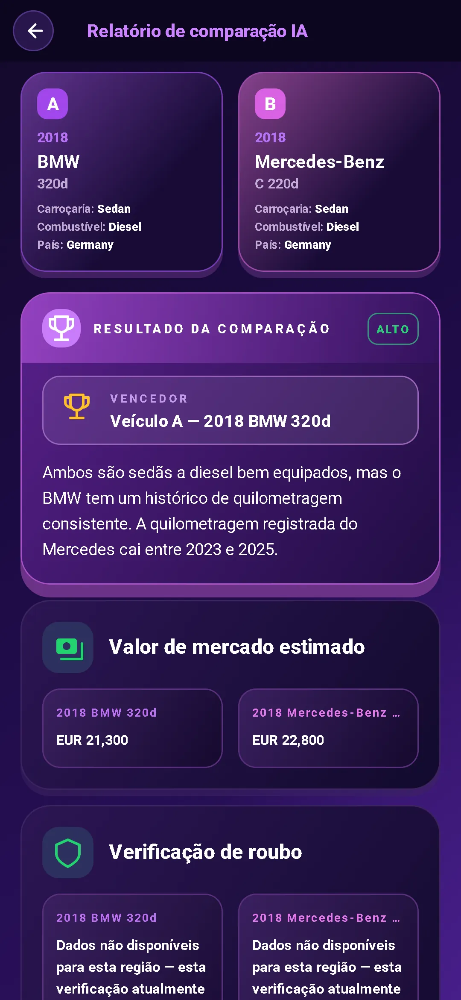

Leia o VIN
Aponte sua câmera para o VIN ou digite-a. Comece com uma verificação gratuita do VIN das especificações básicas do veículo.
Esse carro usado tem uma história. Comece com seu VIN.
Obtenha as especificações, identifique os sinais de alerta e entre na conversa preparado.
Prévia do relatório bloqueada. Os dados disponíveis variam conforme o veículo e a fonte.
Baixe no Google PlayDecodificação VIN gratuita. Relatório completo de IA do $3.99. Sem assinatura.

Vá além de uma pesquisa VIN. Transforme os detalhes em perguntas que valem a pena serem feitas.
Aponte sua câmera para o VIN ou digite-a. Comece com uma verificação gratuita do VIN das especificações básicas do veículo.
Confira motor, versão, tração e outros dados. Consulte recalls, reclamações de proprietários e avaliações de colisão da NHTSA, além do consumo de combustível da EPA.
Consulte valor de mercado e informações de quilometragem. Coloque o preço pedido em contexto antes de começar a negociar.
Receba uma recomendação da IA: comprar, ter cautela ou desistir, com pontuação de inspeção, possíveis pontos fracos e itens para verificar pessoalmente.
Traga perguntas melhores para o vendedor. Use conselhos de inspeção e dicas de negociação para planejar seu próximo passo.
Converse com o assistente de IA, inclusive sobre fotos. Obtenha ajuda para entender os detalhes em qualquer um dos 10 idiomas suportados.


Compare dois carros lado a lado. Veja as especificações e as análises da IA para avaliar os prós e contras antes de ir conhecer o veículo.
Encontre o VIN de 17 caracteres no para-brisa, no batente da porta ou nos documentos do veículo.
Revise as especificações decodificadas e obtenha um relatório de IA com riscos, perguntas e conselhos práticos.
Faça as perguntas certas. Confira os documentos. Agende uma inspeção antes de fechar negócio.
Compra única. Nenhuma assinatura necessária.
Precisa apenas do básico? A decodificação VIN é gratuita no aplicativo.
Saiba o que você está comprando antes de verificar seu próximo carro.
O número de identificação do veículo (VIN) é um identificador exclusivo de 17 caracteres usado em veículos modernos. Um decodificador VIN transforma esse identificador em especificações do veículo, como modelo, motor e transmissão.
Observe a parte inferior do pára-brisa do lado do motorista, no batente da porta do motorista ou nos documentos de registro e seguro do veículo. No aplicativo, digitalize-o com sua câmera ou digite-o.
O relatório completo da IA reúne especificações decodificadas, uma recomendação de comprar, ter cautela ou desistir, pontuação de inspeção, sinais de alerta, itens para verificar, perguntas ao vendedor e dicas de negociação. O app também oferece valor de mercado e informações de quilometragem, recalls, reclamações de proprietários e avaliações de colisão da NHTSA, além do consumo de combustível da EPA. A cobertura e a disponibilidade variam conforme o veículo e a fonte.
A decodificação VIN básica é gratuita no aplicativo. Um relatório completo de IA custa $3.99 como uma compra única, sem necessidade de assinatura.
Quer isso para o SEU carro? Insira seu próprio VIN no aplicativo.
Baixe no Google PlayDecodificação básica gratuita · Relatório completo de IA do $3.99 · Não é necessária assinatura